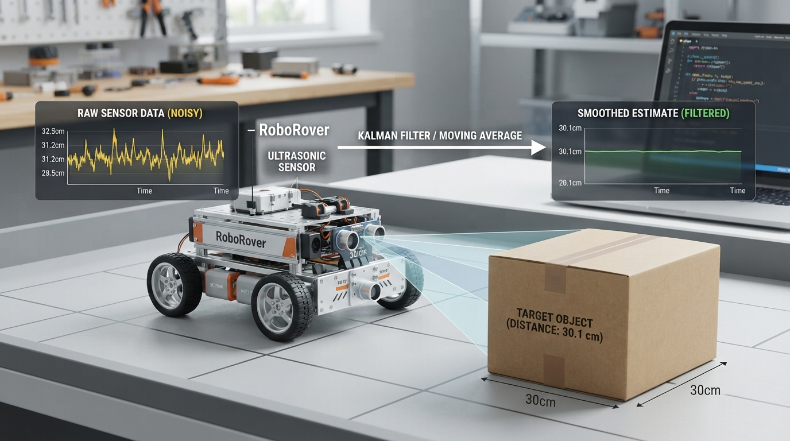

Robots rarely receive perfectly stable measurements. A distance sensor may fluctuate even when the target is stationary—and a smooth signal is not necessarily a correct one.
This Professor OS lesson helps students:
• model measurements as true value plus error and bias;
• distinguish random noise from systematic calibration error;
• calculate averages and exponential smoothing by hand;
• explore the trade-off between smoothness and response time;
• test the ideas in a repeatable Python simulation.
The lesson also connects filtering to physical causes such as vibration, target geometry, reflections, lighting, and electrical interference. Its central engineering question is simple but important: how much should a robot trust the newest reading?
Try the lab with different filter weights, then introduce a sudden change in the simulated environment. Observe when smoothing helps—and when it becomes dangerous.
Explore Professor OS: https://connect.vin/professor-os
#RoboticsEducation #Robotics #Python #Engineering
This Professor OS lesson helps students:
• model measurements as true value plus error and bias;
• distinguish random noise from systematic calibration error;
• calculate averages and exponential smoothing by hand;
• explore the trade-off between smoothness and response time;
• test the ideas in a repeatable Python simulation.
The lesson also connects filtering to physical causes such as vibration, target geometry, reflections, lighting, and electrical interference. Its central engineering question is simple but important: how much should a robot trust the newest reading?
Try the lab with different filter weights, then introduce a sudden change in the simulated environment. Observe when smoothing helps—and when it becomes dangerous.
Explore Professor OS: https://connect.vin/professor-os
#RoboticsEducation #Robotics #Python #Engineering

Sensor Noise in Robotics: From Imperfect Readings to Better Estimates
A practical Professor OS lesson on random error, bias, filtering, lag, and Python simulation—helping students connect noisy measurements to real robot decisions.